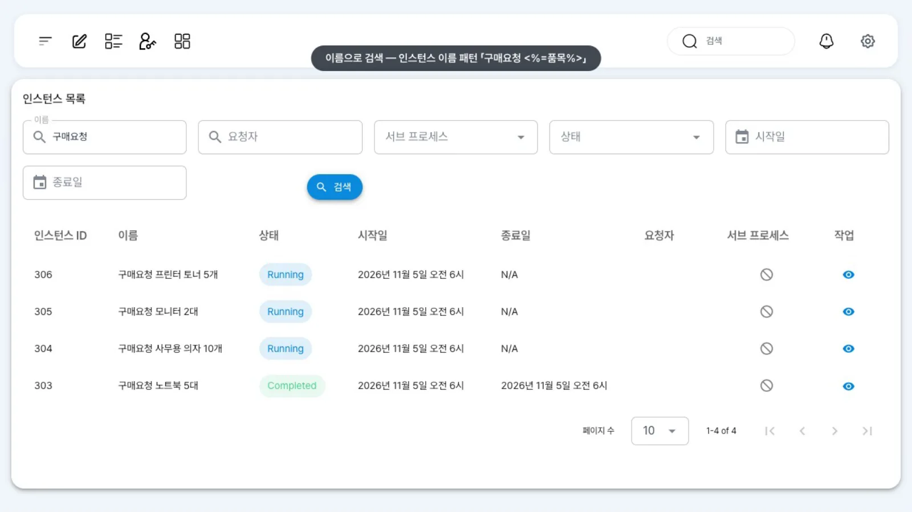
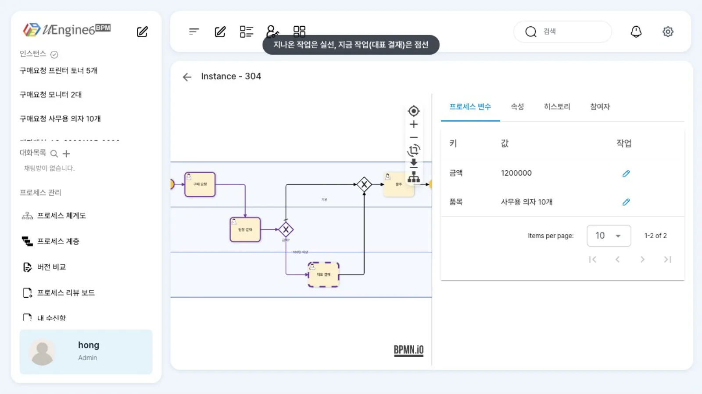
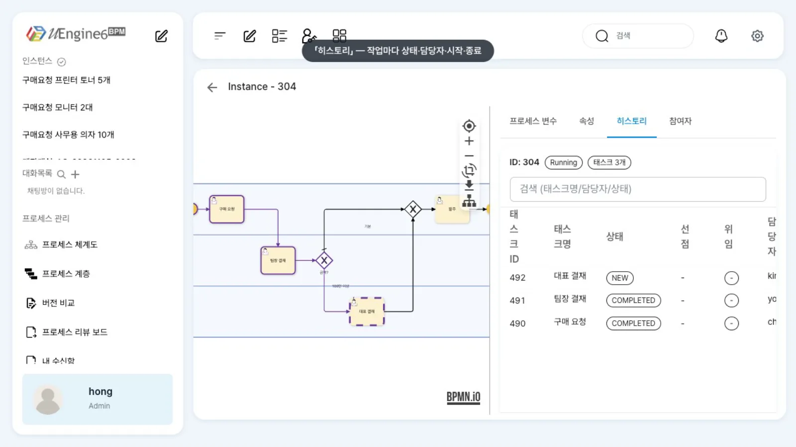

「관리자 페이지」에서 인스턴스를 이름으로 찾고, 상세 화면의 그림으로 진행 상황을 살펴봅니다. 「프로세스 변수」「속성」「히스토리」「참여자」 탭에서 값과 기록을 확인합니다.
무엇을 · 왜#
프로세스 인스턴스는 정의를 한 번 실행한 것입니다. 구매 요청 한 건이 인스턴스 하나입니다. 운영 중에는 「이 요청이 지금 누구에게 가 있나」, 「언제 누가 결재했나」, 「금액이 얼마로 들어갔나」를 묻는 일이 많습니다. 업무 목록에는 자신의 작업만 보이므로 관리자가 관리자 페이지(/admin)에서 이런 질문에 답합니다(Camunda의 Operate에 해당합니다).
| 화면 | 주소 | 보이는 것 |
|---|---|---|
| 인스턴스 목록 | /admin |
인스턴스 ID·이름·상태·시작일·종료일·요청자, 검색 칸 |
| 인스턴스 상세 | /admin/<인스턴스 ID> |
왼쪽 그림(진행 표시), 오른쪽 탭 「프로세스 변수」「속성」「히스토리」「참여자」 |
목록의 「이름」은 인스턴스 이름입니다. 정의의 「인스턴스명 패턴」(instanceNamePattern)으로 정해지므로, 패턴에 품목·요청 번호 같은 값을 넣어 두면 찾기 쉬워집니다(프로세스 변수와 인스턴스 이름). 이 장의 정의는 구매요청 <%=품목%> 패턴을 씁니다.
이 장의 예제 튜토리얼/운영/구매요청:
| 단계 | 담당(레인) | 비고 |
|---|---|---|
| 구매 요청 | 요청자(최구매 choi) |
품목·금액 |
| 팀장 결재 | 팀장(윤팀장 yoon) |
|
| 게이트웨이 「금액?」 | — | 금액 >= 1000000이면 「100만 이상」 |
| 대표 결재 | 대표(김대표 kim) |
100만 원 이상일 때 |
| 발주 | 요청자 |
인스턴스 네 건을 미리 만들어 두었습니다. 노트북 5대(7,500,000원, 끝까지 완료), 사무용 의자 10개(1,200,000원, 대표 결재 대기), 모니터 2대(600,000원, 팀장 결재 대기), 프린터 토너 5개(300,000원, 구매 요청 대기)입니다.
따라 하기#
- 목록 열기. 홍길동(
hong)으로 로그인해 헤더의 「관리자 페이지」 아이콘을 누릅니다(/admin). 「인스턴스 목록」에 모든 인스턴스가 최신순으로 나옵니다. 화면이 좁으면 헤더의 첫 아이콘 「사이드바 접기/펼치기」로 왼쪽 사이드바를 접습니다. - 이름으로 검색. 「이름」 칸에
구매요청을 넣고 「검색」을 누릅니다. 네 건이 나옵니다. 상태는Running·Completed로 나뉘고, 끝난 건에는 「종료일」이 있습니다.
이름 검색 결과 - 상세 열기와 진행 표시. 사무용 의자 행에서 「작업」 칸의 눈 아이콘(상세 보기)을 누르면 「Instance -
」 상세 화면이 열립니다(주소 /admin/<ID>로 바로 가도 됩니다). 그림이 작거나 한쪽으로 치우쳐 있으면 그림 오른쪽 위의 가운데 맞춤(⊕)과 확대(+)를 먼저 누릅니다. 지나온 작업(구매 요청·팀장 결재)은 실선 테두리, 현재 작업(대표 결재)은 점선 테두리로 표시됩니다.
진행 표시 - 「프로세스 변수」. 첫 탭에
품목(사무용 의자 10개)·금액(1200000)이 있습니다. 행의 연필을 누르면 값을 고칠 수 있습니다(실행 중 변수 고치기). - 「속성」. 사용자 속성과 시스템 속성(인스턴스 내부 상태)이 나뉘어 있습니다.
- 「히스토리」. 작업마다 태스크 ID·이름·상태·담당자·시작·종료가 나옵니다. 구매 요청(
choi)·팀장 결재(yoon)가COMPLETED, 대표 결재(kim)가NEW입니다.
히스토리 탭 - 「참여자」. 레인(역할) 팀장·대표·요청자가 나옵니다. 이 브랜치에서는 「엔드포인트」·「이름」 칸이
-로 비어 보이므로, 실제 담당자는 「히스토리」에서 확인합니다. - 끝난 인스턴스. 목록으로 돌아가
노트북으로 검색해 완료된 건을 엽니다. 「히스토리」에 구매 요청 → 팀장 결재 → 대표 결재 → 발주 네 작업이 모두COMPLETED로 남아 있습니다.
설정 레퍼런스#
검색 칸#
| 칸 | 찾는 값 |
|---|---|
| 「이름」 | 인스턴스 이름(패턴으로 만든 이름). 정의 이름이 아닙니다 |
| 「요청자」 | 시작한 사람(init_ep). 이 장의 인스턴스는 API로 시작해 비어 있습니다 |
| 「서브 프로세스」 | true/false — 콜 액티비티로 생성된 하위 인스턴스만 포함 / 제외 |
| 「상태」 | Running, Completed 등 |
| 「시작일」·「종료일」 | 기간 |
같은 정보를 API로#
화면에서 호출하는 API를 그대로 쓸 수 있습니다(토큰은 API로 같은 일 하기 참조).
# 이름으로 검색(관리자 목록과 같은 조회)
curl -s "http://localhost:8288/instances/search/findFilterICanSee?page=0&size=10&name=구매요청" -H "Authorization: Bearer $TOKEN"
# 인스턴스 상태·변수
curl -s http://localhost:9294/instance/<ID> -H "Authorization: Bearer $TOKEN"
curl -s http://localhost:9294/instance/<ID>/variables -H "Authorization: Bearer $TOKEN"
/variables의 키 가운데 :품목처럼 콜론으로 시작하는 키는 프로세스 변수이고, <태그>:_status:prop이 작업 상태입니다.
진행 표시를 읽는 법#
| 그림 | 뜻 |
|---|---|
| 실선(보라) 테두리 | 지나온 작업 |
| 점선 테두리 | 현재 열려 있는 작업 |
| 표시 없음 | 아직 도달하지 않은 작업이나 다른 경로(게이트웨이에서 선택하지 않은 쪽)의 작업 |
알려진 제약#
- 업무 목록의 「완료됨」 칸은 비어 있습니다. 완료 기록은 이 화면의 「히스토리」로 확인합니다.
- 실시간 갱신(SSE)이 없습니다. 상태가 바뀌었으면 화면을 다시 엽니다.
- 「참여자」 탭의 엔드포인트가
-로 나옵니다. 담당자는 「히스토리」로 확인합니다. - API로 시작한 인스턴스는 목록의 「요청자」가 비어 있습니다.
확인 문제#
정의 이름 `튜토리얼/운영/구매요청`으로 검색했더니 아무것도 안 나옵니다. 왜인가요?
「이름」 칸은 인스턴스 이름을 찾습니다. 이 정의의 인스턴스 이름은 구매요청 <품목>이므로 구매요청이나 품목으로 찾습니다.
이 요청을 지금 누가 담당하는지 알려면 어느 탭을 보나요?
「히스토리」 탭에서 상태가 NEW인 작업의 담당자를 확인합니다. 그림에서 점선 테두리로 표시된 작업이 같은 작업입니다.